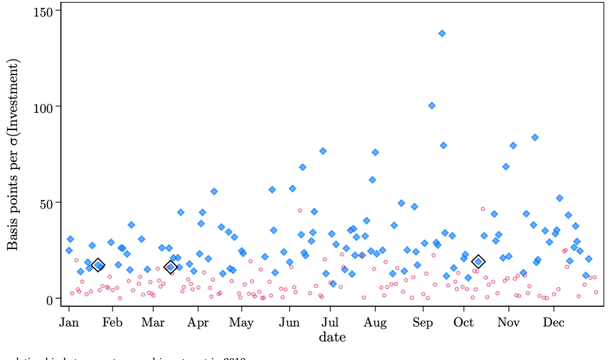
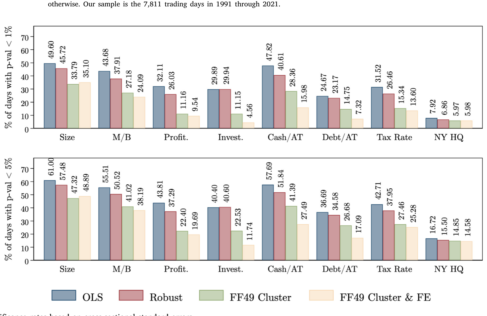
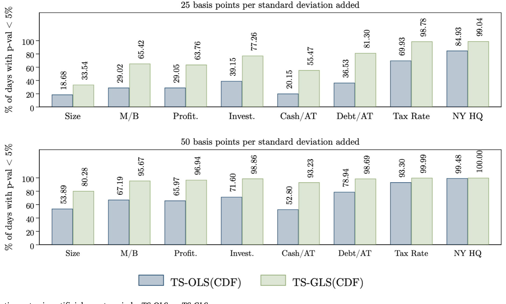
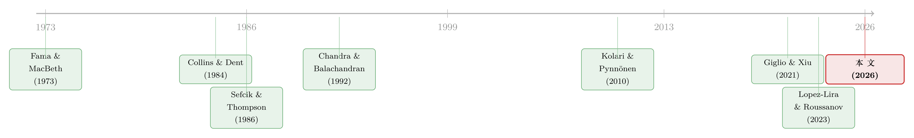

事件研究里的「假阳性」：当一根 t 值不再等于因果
本文读的是 Cohn, Johnson, Liu & Wardlaw (2026, Journal of Financial Economics)：当你用「事件当天的横截面收益 ~ 公司特征」这类回归去做因果推断时，标准的横截面标准误会系统性地把推断做错——在 1991–2021 年间，这类「收益—特征」关系平均有 33.4% 的【普通交易日】在 1% 水平上就显著。作者证明问题的本质是「检验了错误的原假设」，并给出一个补救办法：把事件期的关系拿去和事件前那一串非事件期关系的分布比；再进一步，用 PCA 构造的 GLS 把这套时间序列检验的统计功效提升 2–3 倍。
1 引言：三个事件，一桩疑案
先讲一个让人后背发凉的小故事。
2019 年里有三件事。10 月 11 日，中美就第一阶段贸易协议达成初步意向；3 月 13 日，英国下议院投票反对「无协议脱欧」；1 月 21 日，一轮「血月」月食——很多文化里把它当作不祥之兆。前两件事，按理说预示着一个更有利于投资的环境；第三件，更糟的环境。于是一个再自然不过的做法是：把每家公司在事件当天的股票收益，对它的投资率（capital expenditures / total assets）做一个横截面回归，看看斜率的符号和显著性。
结果非常「漂亮」：前两个事件斜率为正、第三个为负，而且都在 5% 水平上显著。一篇论文的实证三件套，齐了。
但作者在这里轻轻补了一刀——
同样这条「一日收益 ~ 投资率」的关系，在 2019 年【全年所有交易日】里有 48.4% 的日子都在 5% 水平上显著；而且它在超过 40% 的普通日子里，斜率的【绝对值比那三个事件日还要大】。

Figure 1: Daily relationship between returns and investment in 2019
换句话说，你精心挑出的「事件日」，放在一年的日子里平平无奇。那三根让你写进 abstract 的 t 值，随便从日历上抽一天出来，多半也能抽到。这就是全文要讲透的一件事：在事件研究里，「事件当天关系显著」是一个低得离谱的门槛。
而且这绝不是投资率这一个特征的偶然。作者把范围铺开到一系列公司特征（其中不少都出现在已发表的论文里），发现「一日收益—特征」关系在 1991–2021 年间，平均有 33.4% 的交易日在 1% 水平上就显著。要让普通日子的显著频率回落到名义显著性水平，你得把标准误整整放大【最高约 4 倍】。
接着，一个自然的问题是：这到底是哪里出了错？是数据挖掘？是标准误聚类没做对？还是别的什么更深的东西？
2 一个极简框架：错的不是标准误，是原假设
作者的高明之处，是先不急着开实证大炮，而是搭一个能把直觉说透的最小模型。我们跟着走一遍——这是全文的「核武」所在。
设公司 \(i\) 在第 \(t\) 天的收益为 \(r_{i,t}\)。研究者关心的是某个准自然实验事件（发生在 \(t=\tau\)）是否让收益随特征 \(x_{i,\tau-1}\) 产生差异。但每一天除了这个事件，还有作者所谓的「日常新闻 (routine news)」\(n_t\)：它是当天所有背景新闻的一个合成体，会按 \(x\) 的不同对不同公司产生不同的估值冲击。关键在于，\(n_t\) 在事件日 \(\tau\) 照样会来，和别的日子没有两样。
数据生成过程 (data generating process) 写成：
注意 \(x\) 是去均值的（\(x_{i,t-1}-\bar{x}_{t-1}\)），这样交互项只刻画收益反应的【横截面差异】，不掺入任何总量反应。\(n_t\) 独立地每天从一个均值 0、方差 \(\sigma_n^2\) 的分布里抽取。
现在到了事件日。研究者看不到 \(n_\tau\)，他能估的只是 \(n_\tau + e\) 这个合体。把上式在 \(t=\tau\) 写成研究者真正会跑的回归形式：
$$ r_{i,\tau} = a_\tau + b_\tau\, x_{i,\tau-1} + \delta_{i,\tau}, $$
其中 \(a_\tau = m_\tau-(n_\tau+e)\bar{x}_{\tau-1}\)，而 \(b_\tau = n_\tau + e\)。
好，问题来了。令 \(\hat{b}_\tau\) 为 \(b_\tau\) 的回归估计。由于 \(\delta_{i,\tau}\) 独立于 \(x\)、且 \(n_\tau\) 均值为零，\(\hat{b}_\tau\) 是 \(e\) 的【无偏】估计——这一点没问题。麻烦出在标准误上。我们把「\(\hat{b}_\tau\) 作为 \(e\) 的估计」的估计误差方差拆开：
$$ \mathrm{Var}(\hat{b}_\tau - e) = \mathrm{Var}(\hat{b}_\tau - b_\tau + b_\tau - e) = \mathrm{Var}(\hat{b}_\tau - b_\tau + n_\tau) = \mathrm{Var}(\hat{b}_\tau - b_\tau) + \sigma_n^2. $$
最后一步成立，是因为抽样误差 \(\hat{b}_\tau - b_\tau\) 与日常新闻 \(n_\tau\) 独立。这就是全文最核心的一行：
Result 1. \(\mathrm{Var}(\hat{b}_\tau - e) = \mathrm{Var}(\hat{b}_\tau - b_\tau) + \sigma_n^2.\)
请盯住这个多出来的 \(\sigma_n^2\)。常规的横截面标准误，估的是 \(\sqrt{\mathrm{Var}(\hat{b}_\tau - b_\tau)}\)——它只刻画了「\(\hat{b}_\tau\) 偏离真实斜率 \(b_\tau\) 」的抽样误差。可你真正想检验的不是 \(b_\tau=0\)，而是 \(e=0\)。两者之间，永远横着一个 \(\sigma_n^2\)：哪怕样本无限大、抽样误差趋于零，这块由日常新闻造成的方差也【纹丝不动】。于是横截面标准误系统性地高估了 \(\hat{b}_\tau\) 作为 \(e\) 估计量的精度，t 检验就过于频繁地拒绝「事件无差异效应」。
说白了，用横截面标准误，检验的是错误的原假设：它适合检验「事件日收益与 \(x\) 无关 (\(b_\tau=0\))」，可研究者要的是「与【焦点事件】相关的那部分收益和 \(x\) 无关 (\(e=0\))」。由于日常新闻的存在，即便焦点事件毫无作用，事件日也完全可能有一条真实的收益—特征关系。

Figure 2: Significance rates based on cross-sectional standard errors
如图 2 所示，作者把这种「以横截面标准误判显著」的频率画出来，证实了引言里那个触目惊心的数字：跨越各种特征，1% 水平上的显著率平均高达三成多，规模/账面市值比这类「定价特征」、以及五日事件窗口，显著得更频繁——后者尤其要命，因为多日窗口在文献里用得极广。
2.1 那聚类标准误呢？
读到这里，做实证的人本能的反应是：那我把标准误按行业、按地区聚类 (cluster) 不就行了？毕竟 Eq.(5) 告诉我们，\(t\neq\tau\) 时残差 \(\nu_{i,t}=n_t(x_{i,t-1}-\bar{x}_{t-1})+\delta_{i,t}\) 之间存在协方差
$$ \mathrm{Cov}(\nu_{i,t},\nu_{j,t}) = (x_{i,t-1}-\bar{x}_{t-1})(x_{j,t-1}-\bar{x}_{t-1})\,\sigma_n^2, $$
高 \(x\) 的公司彼此正相关，低 \(x\) 的也彼此正相关——看上去就是聚类该上场的地方。
但这里出现了第一个反转：聚类没用。原因很微妙：事件日的日常新闻 \(n_\tau\) 制造的是收益的横截面相关，而不是回归 Eq.(2) 残差 \(\delta_{i,\tau}\) 的相关。问题来自一个【整体平移横截面斜率】的共同冲击（\(n_\tau\) 把整条斜率推上推下），而非给定回归元后残差的相关。聚类调整修的是后者，对前者一筹莫展——残差 \(\hat\delta_{i,\tau}\) 里压根不含 \(n_\tau\) 的任何信息。引言里也印证了这点：加控制变量、按行业聚类、对收益做因子调整，三招都能把显著率往下压，但在 1% 水平上【依然平均超过 10% 的日子】显著。
3 真正关键的一步：拿事件期去比「事件前」
既然问题是「多了一个 \(\sigma_n^2\)」，那补救的思路就该是——找一个同样含着 \(\sigma_n^2\) 的基准来对照。
这就是全文真正关键的一步。作者（沿着 Sefcik and Thompson, 1986 的精神）提出：不要孤零零地看事件日那一个系数，而是把它放进一串【事件前 (pre-event) 非事件日】的同一条关系的时间序列分布里去判断。直觉再清楚不过：事件前的日子里没有焦点事件，却照样有日常新闻 \(n_t\)，于是事件前系数的波动，恰好就是「\(e=0\) 这个原假设下 \(\hat{b}_\tau\) 应有的分布」的一个自助 (bootstrap) 近似。日常新闻给基准也注入了波动——它出现在等式两边，被抵消掉了。
具体三步走。第一步，对事件日 \(t=\tau\) 和它前面 \(L\) 个事件前日子分别跑单日横截面回归：
$$ r_{i,t} = a_t + b_t\, x_{i,t-1} + \epsilon_{i,t}. $$
第二步，估事件专属效应：
$$ \hat{e} = \hat{b}_\tau - \mu(\hat{b}), \qquad \mu(\hat{b}) = \frac{1}{L}\sum_{\ell=1}^{L}\hat{b}_{\tau-\ell}. $$
第三步，检验 \(\hat e\) 是否显著。在此之前，作者给出一组漂亮的性质（证明见附录 B）：
Result 2. 在抽样误差与新闻分布平稳的假设下， $$\underbrace{\mathbb{E}(\hat{e}-e)=0}_{\text{无偏}},\qquad \underbrace{\mathrm{Var}(\hat{e}-e)=\mathrm{Var}(\hat{b}_{\tau-\ell})}_{\text{时序样本方差}},\qquad \underbrace{\Phi(\hat{e}-e)=\Phi(\hat{b}_{\tau-\ell})}_{\text{时序样本 CDF}}.$$
这三行的含义是：\(\hat e\) 仍是 \(e\) 的无偏估计；而它的抽样误差分布，就【等于】事件前那串系数的时间序列分布。于是第三步有两种实现：
- Step 3(t)：把事件前系数的标准差当作标准误，算 \(\hat{t}\equiv \hat{e}/\sqrt{\mathrm{Var}(\hat{b}_{\tau-\ell})}\)，对照正态/t 分布。
- Step 3(CDF)：直接用事件前系数（去均值后绝对值）的经验 CDF 算一个 p 值，即 Eq.(10) 的免模型对应物：
$$ \hat{p}\equiv \frac{1}{L+1}\Big[\sum_{\ell=1}^{L}\mathbb{1}\big(\,|\hat{b}_{\tau-\ell}-\mu(\hat{b})| > |\hat{b}_\tau-\mu(\hat{b})|\,\big)\Big]. $$
这是个双尾检验。它的好处是对事件前关系的分布不做任何分布假设——而这恰恰要命，因为作者发现这些「收益—特征」关系的时间序列普遍有【厚尾 (fat tails)】。
于是第二个反转来了：即使你用了时间序列对照，t 检验仍然略微过度拒绝。这正是 Sefcik-Thompson 式「组合 OLS (portfolio OLS)」的遗留毛病——厚尾让 t 统计量失真。而换成基于经验 CDF 的 p 值，问题被治好了：1% 水平上的显著率回落到约 1% 的日子。换句话说，对照分布要用，但判显著要用经验 CDF、别用 t。
4 第三个反转：对照能纠偏，但功效太低——GLS 登场
到这里，纠偏的问题解决了。但作者诚实地指出一个新的隐忧：这套基于 OLS 的时间序列方法（下称 TS-OLS），可能【统计功效太弱】。原因是它完全没利用收益之间的相关结构（Chandra and Balachandran, 1992 早就提示过这点），而在这个场景里，真实的效应量往往相对收益噪声而言很小。
作者用一个巧妙的「人造事件」实验来量化功效：人为地在短期收益里注入一条与特征相关的关系，造出一批 artificial event windows，再看方法能多频繁地把它检测出来。结果令人沮丧——比如，对「五日收益里每一个标准差的特征变化对应 50bp 的人造增量」，TS-OLS 在 5% 水平上的平均检测率 (detection rate) 只有 35.1%。一大半真实效应，被漏掉了。
于是真正的创新登场：把第一步的横截面回归从 OLS 换成 GLS——作者称之为时间序列 GLS (time-series GLS, TS-GLS)。两套方法【唯一】的区别就在 Step 1 怎么估那些横截面回归。GLS 的好处是同时提升事件日和非事件日估计的效率，从而抬升功效。
难点在于：GLS 需要每天一个收益协方差矩阵的逆作为加权矩阵，而协方差矩阵本身很难估准。作者的解法借自资产定价文献（Giglio and Xiu, 2021；Lopez-Lira and Roussanov, 2023）：用主成分分析 (principal component analysis, PCA) 把近期收益里最重要的几维相关结构编码进协方差矩阵，按一个套利定价 (APT) 结构
$$ r_{i,t} = \phi_i + \sum_{k=1}^{K}\lambda_{i,k} f_{k,t} + \epsilon_{i,t}, \qquad \mathrm{Cov}(\epsilon_{i,t},\epsilon_{j,t})=\begin{cases}\sigma_i^2 & i=j\\ 0 & i\neq j\end{cases} $$
来给出协方差矩阵的元素
$$ \hat\Omega_{r,ij}\equiv \mathrm{Cov}(r_{i,t},r_{j,t}) = \sum_{k=1}^{K}\lambda_{i,k}\lambda_{j,k}\,\mathrm{Var}(f_{k,t}) + \mathbb{1}(i=j)\sigma_i^2. $$
这里有个容易被忽略却重要的细节：作者强调，他们比较的是事件日与事件前日的【GLS 系数】，而【不是】简单地用 GLS 跑一个单日横截面回归。原因正是第 2 节那个 Result 1——纯横截面的 GLS 哪怕更有效率，它的标准误依然只刻画抽样误差，照样漏掉 \(\sigma_n^2\)。只有继续走「事件期对照非事件期」的路子，纠偏才不丢。
效果如何？TS-GLS 检测人造关系的频率，是 TS-OLS 的【2 到 3 倍】。还是上面那个 50bp/五日的例子，5% 水平上的平均检测率从 35.1% 一举提到 61.2%——功效的巨大改善。

Figure 4: Detection rates in artificial event periods: TS-OLS vs TS-GLS
如图 4 所示，在各种人造事件设定下，TS-GLS（实心）对真实效应的检测率系统性地高于 TS-OLS（空心）。作者还把 Stata 和 Python 模块都开源了，两套（OLS、GLS）程序都给好——这对一个方法论贡献能否被真正采用，至关重要。
5 为什么聚类和因子调整都「不够」：相关结构的复杂与漂移
故事讲到这儿，还剩最后一个「为什么」。作者去拆收益的主成分，回答两件事：这些「收益—特征」关系背后的经济驱动是什么？GLS 的效率从哪来？
答案是：收益的横截面相关结构【又复杂又不稳定】。和 Lopez-Lira and Roussanov (2023) 一致，作者发现这些相关是高度多维的，很难映射到传统的预期收益因子上；更要命的是，它随时间剧烈漂移、常常是【时期特异】的——2008 年，对金融业收益的敏感度主导了横截面差异；2021 年，则换成了对「meme 股」收益的敏感度。
正是这种「复杂 + 漂移」，解释了为什么聚类和因子调整都只能治标：你事先选定的行业分组或因子，永远追不上当下这一天真实的相关结构。而 TS-GLS 用近期收益的 PCA【动态地】重估协方差，恰好绕过了「猜错因子」的陷阱。（关于「收益的主成分难以被传统因子解释、且因子动物园本身从相关结构里冒出来」这一更大的话题，可参见《弱替代：因子动物园是从哪里冒出来的？》与《压缩横截面：因子动物园的尽头，不是更少的因子，而是更聪明的收缩》。）
6 文献脉络
把这条线索捋一捋，能看清这篇论文站在哪。
最早，事件研究的推断难题集中在【平均异常收益】上：收益因重叠暴露而相关，会污染对均值事件收益的推断（Collins and Dent, 1984；Bernard, 1987）。沿着这条路，Kolari and Pynnönen (2010) 给出基于跨公司平均相关来修正均值事件窗口标准误的办法。但作者点明：这类方法在【横截面】场景里失灵，因为它没把收益相关对【特定公司特征】的依赖纳进来。
另一条线，是 Fama and MacBeth (1973) 的两步法精神——用横截面斜率的时间序列变动来做推断，以吸收共同冲击。本文方法在气质上与之相通，但有一个关键差别：它不是对【所有】时期求平均，而是专门把事件期关系拿去和【非事件期】关系的分布比，承袭的是 Sefcik and Thompson (1986)——后者在概念上描述了横截面事件研究的这个难题，却既没评估它在现实中的严重程度，提出的「用事件前关系做检验」也长期被忽视（作者对 2014–2023 年 81 篇相关论文的调查显示，只有 6% 用了这类时间序列方法）。

至于功效的隐忧，Chandra and Balachandran (1992) 早就指出组合 OLS 没利用相关信息。本文的落点，正是把这两条线接起来：用 Sefcik-Thompson 的对照思想纠偏，再借 Giglio and Xiu (2021)、Lopez-Lira and Roussanov (2023) 的 PCA 协方差思路造一个 GLS 变体补上功效——既不丢纠偏，又把统计功效提了 2–3 倍。
7 评论与延伸（Q&A + 研究方向）
(a) 几个可能的疑问
Q：这不就是「多重检验/数据挖掘」的老问题换个皮吗？
不是。数据挖掘说的是「你试了很多特征/很多事件，挑了最显著的报」。这里的病更深：哪怕你【只跑一次】、事先锁定一个特征和一个事件，横截面标准误依然系统性地高估精度，因为它漏掉了 \(\sigma_n^2\)。问题出在「检验了错误的原假设 (\(b_\tau=0\) 而非 \(e=0\))」，与试了多少次无关。
Q：聚类标准误是实证的标配，为什么这里救不了场？
因为冲击的性质不对。聚类修的是「给定回归元后残差 \(\delta_{i,\tau}\) 的相关」；而这里的祸首 \(n_\tau\) 是一个把整条横截面斜率上下平移的【共同冲击】，它体现在斜率 \(b_\tau\) 的波动里，回归残差里根本不含它的信息。聚类对它无能为力——当然，若 \(\delta_{i,\tau}\) 本身有相关，聚类仍有它独立的用处。
Q：用「事件前」而不用「事件后」，会不会丢信息？
作者明确讨论了。原则上事后日子也能用，但事件后容易有「公告后漂移 (post-announcement drift)」或后续事件，会污染对照分布；事件前更干净。若担心信息提前泄露，还可以在事件前留一个滞后 \(d>0\)，用更早的窗口。
Q：TS-GLS 的功效提升，会不会是以「更容易假阳性」为代价换来的？
不会，这正是设计的精巧处。GLS 只改 Step 1 的估计方式，整套「事件期对照事件前分布」的纠偏框架原封不动。人造事件实验衡量的是【检测真实注入效应】的能力（功效），而 size 由对照分布控制——所以它是「在控制住假阳性的前提下」把真阳性检出率从 35.1% 提到 61.2%。
Q：为什么判显著一定要用经验 CDF，而不是 t 检验？
因为「收益—特征」关系的时间序列有显著厚尾。t 检验隐含正态尾部假设，在厚尾下会过度拒绝——作者发现即便用了时间序列对照，t 版本的显著率仍偏高；而经验 CDF 不对分布做任何假设，把 1% 水平的显著率压回约 1%。代价是个小技术约束：要让 \(L+1\) 能被 \(1/p^\ast\) 整除（取 \(L\) 为 100 的倍数减一即可）。
Q：那五日窗口比一日窗口更糟，对已发表文献意味着什么？
意味着风险更高的恰恰是最常用的做法。多日事件窗口在公司金融里极其普遍，而它的「普通日显著率」比一日窗口更高。这等于说，一批用多日窗口、只报横截面 t 值的结论，其证据强度可能被严重高估——这是本文最该让审稿人警觉的一句话。
(b) 几个可能的研究问题与提案
1. 把这套检验搬到公司债事件研究。 【经济故事】债券对宏观「日常新闻」（利率、信用利差、流动性冲击）的暴露随发行人特征（评级、久期、行业）系统性变化，\(\sigma_n^2\) 很可能比股票更大；很多「事件 × 债券收益 × 特征」的结论或许同样脆弱。【可行性】中。数据上用 TRACE 日度债券收益 + Mergent FISD 特征即可；难点是债券非同步交易、零交易日多，单日横截面回归的样本和 PCA 协方差都更难估，需要在流动性筛选上下功夫。
2. 外资持有人冲击的横截面检验，到底有多少是「真信号」。 【经济故事】指数纳入、资本账户开放这类事件常被用来识别外资对个券/个股的影响，做法正是「事件日收益 ~ 外资暴露特征」。本文提示这类设计可能假阳性偏高。【可行性】高。把已发表的几个外资事件直接套上 TS-OLS/TS-GLS 重做一遍即可，作者的开源模块拿来就能用；贡献是「方法论复核」而非新数据。
3. \(\sigma_n^2\) 的截面与时序：哪些特征天生更危险？ 【经济故事】Result 1 说危险程度随 \(\sigma_n^2\) 放大。那么哪些特征（规模、BM、动量 vs. 治理、ESG）天生 \(\sigma_n^2\) 大、最不适合做单日事件研究？这本身可以做成一张「特征危险度地图」。【可行性】高。用本文的日度回归框架，对每个特征估其日系数的时序方差即可，纯描述性但实用，能直接给做实证的人一份避雷指南。
4. 把 GLS 的 PCA 协方差换成「条件因子」会不会更好。 【经济故事】作者强调相关结构时期特异（2008 金融、2021 meme）。若用 IPCA / 条件因子模型让载荷随宏观状态变化，理论上能更贴合当下的协方差，功效或可再上一台阶。【可行性】中。方法上可行（IPCA 有成熟实现），但要小心「过拟合近期相关」反而损害样本外的 size 控制，需要严格的人造事件回测来验证净收益。
5. 多日窗口里的「漂移污染」如何与本问题分离。 【经济故事】五日窗口既放大了 \(\sigma_n^2\)，又混入了公告后漂移。能否设计一个把「确认偏差/漂移」与「日常新闻」分项识别的检验？【可行性】低到中。概念清楚但识别难：两者都体现为事件后收益与特征的关系，需要额外的外生变动（如随机化的信息披露时点）才能撬开，现成数据里不易找。
参考文献
- Bernard, V.L. (1987). Cross-sectional dependence and problems in inference in market-based accounting research. Journal of Accounting Research 25(1), 1–48.
- Chandra, R., Balachandran, B.V. (1992). More powerful portfolio approaches to regressing abnormal returns on firm-specific variables for cross-sectional studies. Journal of Finance 47(5), 2055–2070.
- Cohn, J.B., Johnson, T.L., Liu, Z., Wardlaw, M.I. (2026). Past is prologue: Inference from the cross section of returns around an event. Journal of Financial Economics 180, 104278.
- Collins, D.W., Dent, W.T. (1984). A comparison of alternative testing methodologies used in capital market research. Journal of Accounting Research 22(1), 48–84.
- Fama, E.F., MacBeth, J.D. (1973). Risk, return, and equilibrium: Empirical tests. Journal of Political Economy 81(3), 607–636.
- Giglio, S., Xiu, D. (2021). Asset pricing with omitted factors. Journal of Political Economy.
- Lopez-Lira, A., Roussanov, N. (2023). Do common factors really explain the cross-section of stock returns? Working paper.
- Sefcik, S.E., Thompson, R. (1986). An approach to statistical inference in cross-sectional models with security abnormal returns as dependent variable. Journal of Accounting Research.
- Abadie, A., Athey, S., Imbens, G.W., Wooldridge, J.M. (2023). When should you adjust standard errors for clustering? Quarterly Journal of Economics 138(1), 1–35.
- Bertrand, M., Duflo, E., Mullainathan, S. (2004). How much should we trust differences-in-differences estimates? Quarterly Journal of Economics 119(1), 249–275.